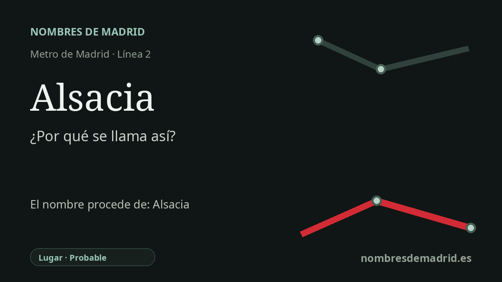

Publicado el · Investigación de Nombres de Madrid · Cómo verificamos cada origen · 8 fuentes consultadas
Respuesta rápida
La estación de Alsacia toma su nombre de la plaza de Alsacia, bajo la que se construyó al ampliarse la línea 2 hasta Las Rosas en 2011. El nombre de la plaza remite a Alsacia, la región fronteriza del Rin cuya historia moderna enlaza a Francia, Alemania, el conflicto y después la reconciliación europea.
La historia del nombre
El nombre de la estación procede, en primer lugar, de la ciudad que la rodea. Alsacia se inauguró en la línea 2 el 16 de marzo de 2011, cuando el Metro se prolongó hacia el este desde La Elipa hasta Las Rosas, y la documentación oficial de la obra incluye Alsacia entre las cuatro estaciones nuevas. No fue un nombre creado sin referencia urbana: los documentos municipales ya hablaban de la nueva estación y del área intermodal en la plaza de Alsacia.
Detrás de la plaza madrileña está Alsacia, región histórica del Alto Rin, situada hoy en el este de Francia junto a la frontera alemana. Alsacia es la forma española habitual del nombre de la región. En el entorno de la estación encaja con un paisaje local de nombres geográficos europeos, donde aparecen cerca referencias como Aquitania, Suecia, Ginebra y Guadalajara.
La historia de Alsacia explica por qué el nombre pesa más que una simple etiqueta de mapa. La Paz de Westfalia de 1648 dio a Francia derechos e influencia importantes en Alsacia, pero el dominio francés no fue una transferencia única y limpia de toda la región: Estrasburgo, por ejemplo, fue ocupada por Francia más tarde, en 1681. En la época contemporánea, Alsacia-Lorena fue cedida por Francia a Alemania en 1871 tras la guerra franco-prusiana, volvió a Francia después de la Primera Guerra Mundial, fue incorporada por la Alemania nazi durante la Segunda Guerra Mundial y quedó restituida a Francia en 1945.
Esa historia fronteriza convirtió a Alsacia en uno de los símbolos más conocidos de la rivalidad franco-alemana. Después de 1945, la misma frontera entró en otro relato: Francia y Alemania pasaron del conflicto repetido a la cooperación institucional, y el Tratado del Elíseo de 1963 es presentado por la diplomacia francesa como símbolo de reconciliación y base de la integración europea.
Para la estación, la prueba más sólida está en el plano local: fuentes oficiales del Ayuntamiento y de la Comunidad de Madrid verifican la apertura de 2011, el contexto de la línea 2 y la relación con la plaza de Alsacia. No se ha localizado un acuerdo municipal de denominación ni una explicación oficial que diga que la plaza se nombró específicamente por la reconciliación europea. Por ello, la lectura recomendada es: nombre directo por la plaza de Alsacia, y en último término por la región de Alsacia; el marco de las calles europeas y de la reconciliación es contexto útil, pero debe presentarse como interpretación y no como motivo documentado de la denominación.